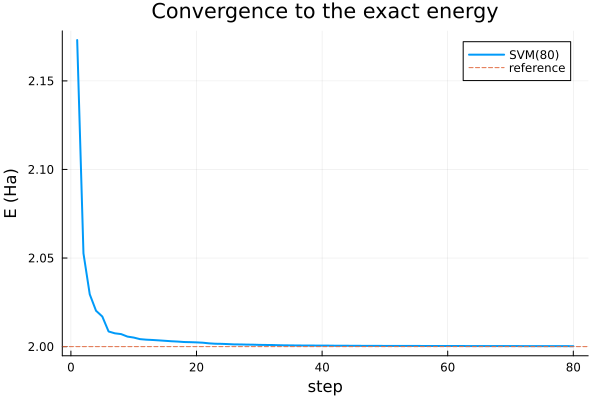
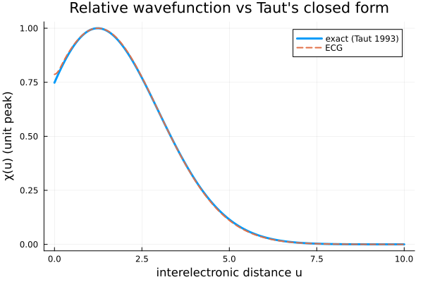
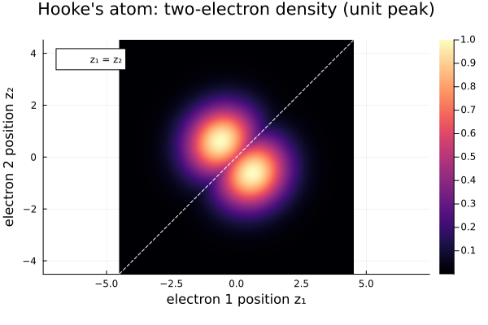

Hooke's atom (harmonium)
Two electrons bound to a fixed center by a harmonic trap and repelling each other through the Coulomb interaction. At trap frequency ω = 1/2 the ground state is known in closed form (Taut 1993): E₀ = 2 Ha, with relative wavefunction χ(u) ∝ (1 + u/2) e^{-u²/8}. The fixed center is a particle of mass 1e15; each Oscillator(1, i) term adds r² between the center and electron i.
using FewBodyECG
using FewBodyECG: jacobi_transform
using Plots
ω = 0.5
masses = [1.0e15, 1.0, 1.0]
ops = Kinetic(masses) +
0.5 * ω^2 * Oscillator(1, 2) + # ½ω² r₁² (trap on electron 1)
0.5 * ω^2 * Oscillator(1, 3) + # ½ω² r₂² (trap on electron 2)
Coulomb(2, 3) # +1/r₁₂ electron–electron repulsion
exact = 2.0 # Taut 1993, ω = 1/2
sol = solve(ops, SVM(basis = 80, candidates = 40))
@info "Hooke's atom" E₀ = sol.E₀ exact Δ = sol.E₀ - exact
plot(sol, exact; title = "Convergence to the exact energy")
jacobi_transform gives the matrix J that maps particle positions to the Jacobi coordinates of the solution, so ψ(J * x) evaluates the wavefunction at particle positions x. With both electrons on the z axis:
ψ = wavefunction(sol)
J, _ = jacobi_transform(masses)
Ψ(z₁, z₂) = ψ(J * [0.0, z₁, z₂])Ψ (generic function with 1 method)The relative wavefunction χ(u) puts the electrons at ±u/2. Both curves are scaled to a unit peak so that only their shapes are compared.
u = range(0, 10, length = 200)
χ_ecg = [Ψ(x / 2, -x / 2) for x in u]
χ_exact = [(1 + x / 2) * exp(-x^2 / 8) for x in u]
χ_ecg .*= sign(sum(χ_ecg .* χ_exact)) / maximum(abs, χ_ecg)
χ_exact ./= maximum(χ_exact)
@info "Relative wavefunction" max_shape_error = maximum(abs, χ_ecg .- χ_exact)
plot(u, χ_exact; label = "exact (Taut 1993)", linewidth = 3)
plot!(
u, χ_ecg; label = "ECG", linestyle = :dash, linewidth = 2,
xlabel = "interelectronic distance u", ylabel = "χ(u) (unit peak)",
title = "Relative wavefunction vs Taut's closed form",
)
The two-electron density in coordinate space. The trough along the diagonal z₁ = z₂ is the Coulomb hole: the electrons avoid each other.
zs = range(-4.5, 4.5, length = 251)
density = [abs2(Ψ(z₁, z₂)) for z₂ in zs, z₁ in zs]
heatmap(
zs, zs, density ./ maximum(density);
c = :magma, aspect_ratio = :equal, widen = false,
xlabel = "electron 1 position z₁", ylabel = "electron 2 position z₂",
title = "Hooke's atom: two-electron density (unit peak)",
)
plot!(zs, zs; color = :white, linestyle = :dash, label = "z₁ = z₂")